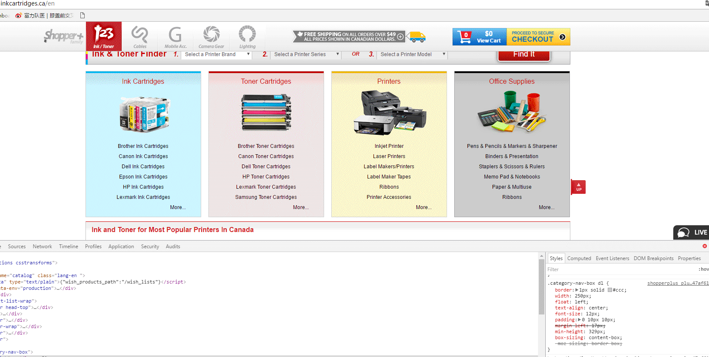

.box1 { box-sizing: content-box; } /* 默认值 */
.box2 { box-sizing: padding-box; } /* 火狐曾经支持 */
.box3 { box-sizing: border-box; } /* 支持 */
.box4 { box-sizing: margin-box; } /* 从未支持 */
See the Pen KaWpGR by alex (@lrrhero2008) on CodePen.

每个盒模型的位置是三维的，除了x轴和y轴，还有一个表示层叠的z轴；
z轴上的位置决定了我们看到的盒模型之间的层叠效果（谁盖住谁）。
CSS3 中一个新的布局模式，与时俱进的产物，为了现代网络中更为复杂的网页需求而设计
.flex-box-block {
display: flex;
}
.flex-box-inline {
display: inline-flex;
}
听说你们都在找福？
那个，有敬业福吗？给我几个呗